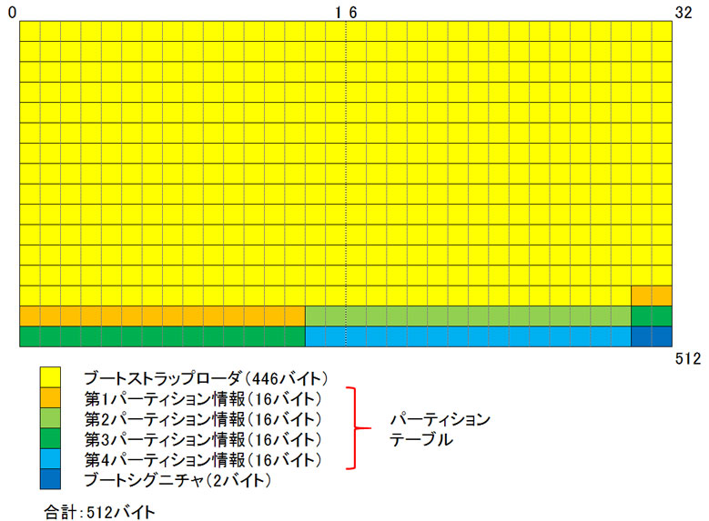

- 問題ID : 21897 システム起動のカスタマイズ
- 履歴
正解
init
解説
正解は init です。
init はカーネルによりはじめに実行され、PID（プロセス ID）は必ず 1 で固定です。
SysVinitにおけるinitの動作としては /etc/inittab を読み込み、そこに設定されているランレベル毎の処理を行います。
このプロセスが他のプロセスを起動していくことになり、それにはユーザが操作する仮想コンソールや各種デーモン等も含まれるため、init プロセスは他の全てのプロセスの親（プロセスツリーの頂点）として存在することになります。
な
お、initプログラムとして、初期化処理を高速化したUpstartを使用している場合や、起動処理の概念自体がSysVinitと大きく異なっている
systemdを採用している場合は「/etc/inittab」ファイルは使用されません。（systemdでは、initはsystemdへのシンボ
リックリンクとなっています。）また、systemdでは、ランレベルに近い概念はありますが、ランレベルは使用されず、指定した処理のグループである
ターゲットに基づいて起動処理が継続されます。
誤りの選択肢について解説します。
・kernel
カーネルはプロセスとしては存在しません。プロセスを管理する役割などを持った、より下部のシステムです。
・root
root は全管理権限を持った特別なユーザの名前で、プロセスではありません。
・boot
「ブートプロセス」という言い回しが使われていることがありますが、これは日本語にすれば「起動処理」という意味で、boot という名前のプロセスが存在しているわけではありません。
・bios
BIOS は最もハードウェアに近い部分を司るもので、Linux システム内のプロセスではありません。
参考
【新旧ファームウエアと起動する順序】
Linuxにおいては、いくつかのブートプロセスのパターンがありますが、組み込みシステムなどの場合を除いた、x86コンピュータの一般的なシステムの場合、ファームウエアの観点からは大きく二つのパターンが存在します。
1つは、旧来から使われているBIOSを使ったシステム、もう1つは、新しいファームウエアであるUEFI（Unified Extensible Firmware Interface）を使ったシステムです。
「Unified
Extensible Firmware
Interface」は厳密に定義すると、OSと新しいファームウエアのインターフェイスであり、ファームウエアそのものと全く同じとは言えませんが、こ
こではUEFIに適した（対応した）新しいインターフェイスとファームウエアを総称して、UEFIと呼称しています。この文脈で解釈すると、BIOSは、
UEFIには対応していない古いファームウエア、ということになります。
・BIOSを使ったシステム
BIOS、MBRのブートローダ、カーネル、init の順にブートプロセスが進行します。
・UEFIを使ったシステム
UEFI、ESP（のブートローダ）、カーネル、init の順にブートプロセスが進行します。
※（ ）内は必須ではなく、UEFIから直接カーネルを呼び出すことも可能です。
【起動プロセス上の役割と詳細】
上記のブートプロセスを踏まえて、各段階の役割を解説します。
OS 起動に失敗する場合の問題特定の際にも重要なので、自分で順を追って説明できるようにしておきましょう。
・ファームウエア（BIOS、UEFI）
OSよりもハードウェアに近い部分を司るシステムで、物理的なハードウェア（マザーボード）上に書き込まれています。
BIOS
では、コンピュータの電源を入れると、まずBIOSが起動し、記憶装置等に関して最低限の認識をした後、MBR（記憶装置（※）の先頭セクタ、ブート用の
特殊領域。ブートローダが格納されている）
を読み込み、得られたブートローダに制御を移します。（※記憶装置には、内蔵HDDだけではなく、外付けHDDやUSBメモリのようなリムーバブルメディ
アも含まれます。）
一方、UEFIは、記憶装置などを認識した後、最初にESP（EFI System Partition）と呼ばれるUEFI用のシステム起動領域にアクセスします。起動には、ブートローダーを使用するほか、UEFIが直接OSを起動することも可能です。
BIOSもUEFIもファームウエアとしての位置づけになりますが、次のような差があります。
BIOSが設計時期が古く制限された基本的な機能のみだったのに対し、UEFIはより多機能で作りこまれています。
UEFIの方がBIOSに比べブートが高速で、UEFIではMBRの制限にとらわれないため、2TiBを超えるディスクからブート可能などの利点もあります。
なお、UEFIでは、MBR方式の代替となるGPT（GUID Partition Table）と呼ばれるパーティション方式を使えます。
・ブートローダ
ブートローダは記憶装置内のカーネルをロードし、制御を移す役割を果たします。
Linux システムでは、GRUBなどが該当します。
BIOSを使うシステムでは、一台のハードディスクにLinux単体のみがインストールされている場合、MBRにブートローダーが配置されます。
一台のハードディスクに複数のOSがある場合は、MBRにインストールされる場合と、PBR（パーティションブートレコード：パーティションの先頭部分で、ブートセクタとも呼ばれる）にインストールされる場合があります。
MBRにインストールされた場合、各OSのブートローダーに制御を渡す役割も担いますが、PBRにインストールされた場合は、そのパーティションのOSのブートのみを司ります。
MBRに格納される場合は、MBRに置かれる第一段階部分と、記憶装置内の別の場所に格納されている第二段階部分があります。
このように分かれている理由は、MBRには厳しいサイズ制限があるためです。
第一段階のブートローダはMBRの先頭446バイトの領域にインストールされます。

一
方、UEFIによる起動を行うシステムでは、MBRを使った起動や厳しいサイズ制限などは必要ありませんが、ESPと呼ばれるシステム起動用の領域が必要
とされ、ここにブートローダーが置かれます。このESPはFATでフォーマットされている領域で、ブートローダーなどの他、起動に必要なドライバやプログ
ラムも置かれます。ESPは、GPTパーティション形式のディスクに置かれ、MBRの制約から解放されます。
なお、UEFIの場合、ブートローダーは必ずしも必要ではなく、直接カーネルの起動も可能です。
・カーネル
カーネルは起動されると、高度にハードウェアを認識・制御し、ルートパーティションのマウントなど様々な初期化処理を行います。
その後、init という特別な最初のプロセスを起動します。
・init
最初に起動されるプロセスで、PID（プロセス ID）は必ず 1 です。
SysVinitを使用するシステムの場合、設定ファイル /etc/inittab の記述に基づいて、自動起動するべきプロセスを立ちあげるなど、アプリケーションレベルの初期化を行います。
以降、init プロセスは全てのプロセスの先祖（直接・間接的な呼び出し元）として存在し続けます。
なお、initプログラムとして、初期化処理を高速化したUpstartやsystemdを採用している場合は、「/etc/inittab」ファイルは使用されません。